Paigaldusjuhendid
Samm-sammuline dokumentatsioon paigaldusmeeskonnale: detailid, asukohad, ühendused ja vajalikud kinnitusvahendid.
Platsile kaasa3D-mudelid, tootmisjoonised, lõikelehed ja paigaldusjuhendid — ning samast mudelist ka koosteanimatsioonid ja treeningmängud, millega paigaldaja saab toote selgeks enne, kui esimene laud saetakse.
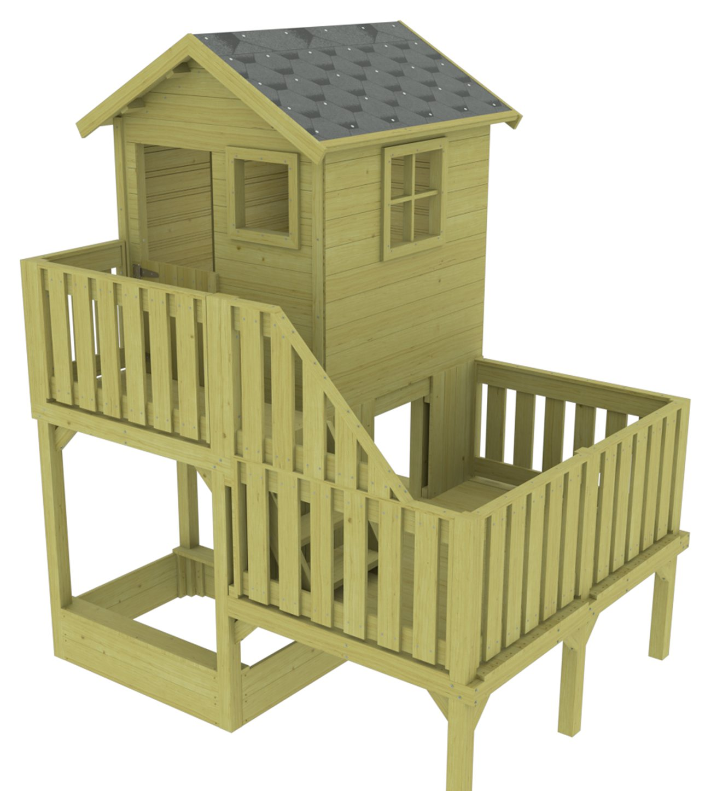
Ei ole lihtsalt ilusad joonised. Loome dokumentatsiooni, mille järgmine inimene saab reaalselt tootmises või paigaldusplatsil kasutusele võtta.
Samm-sammuline dokumentatsioon paigaldusmeeskonnale: detailid, asukohad, ühendused ja vajalikud kinnitusvahendid.
Platsile kaasaSama mudel liikuma pandud: toode laguneb detailideks ja pannakse õiges järjekorras uuesti kokku. Müügiks, juhendisse ja tootmise sisekoolitusse.
Video / veebInteraktiivne mäng, kus paigaldaja paneb toote virtuaalselt kokku — õiges järjekorras, õigete kinnitustega. Vead tulevad välja ekraanil, mitte platsil.
BrauserisKlient paneb toote ise kokku: seinad, sisustus, materjalid ja toonid. Iga valik on sinu päris geomeetria, mitte pilt — ja päringuni jõuab juba valmis kombinatsioon.
Veebis, 3DPöörlev ja suumitav toode otse tootelehel. Üks fail, mis töötab telefonis ja arvutis, ilma pluginate ja rakendusteta.
TooteleheleOstja suunab telefonikaamera oma hoovi või tuppa ja näeb toodet päris mõõdus, päris kohas. Mööbel, saunad, aiamajad — enne kui midagi on tellitud.
Telefoni kaameragaDetailne digitaalne mudel konstruktsioonist, elementidest ja sõlmedest. Probleemid tulevad nähtavale enne, kui materjal saetakse.
1:1 geomeetriaSelged koostejoonised ja täpsed materjaliandmed, mida saab kasutada tootmise planeerimisel ja järkamisel.
TootmisvalmisOlemasolevate projektide kontroll, korrastamine ja viimine ühtseks tootmisloogikaks.
KontrollitudKui 3D-mudel on olemas, saab sellest lisaks joonistele teha ka animatsiooni ja treeningmängu. Sama geomeetria, samad detailinumbrid — ainult teine väljund.
Toode võetakse ekraanil lahti ja pannakse uuesti kokku — detail detaili haaval, samas järjekorras nagu päris paigaldus. Kõige selgem viis näidata, kuidas asi käib, ilma et keegi peaks joonist lugema õppima.
Kui mudel on korra tehtud, ei pea ta jääma ainult sinu arvutisse. Kolm väljundit samast geomeetriast: klient paneb toote ise kokku, keerab teda igast küljest ja paneb telefoniga oma õue. Kõik brauseris — midagi ei pea installima.
Seinad, sisustus, materjalid ja toonid — iga valik vahetab päris geomeetriat, mitte pilti. Ostja näeb kohe, mida ta tellib, ja sinuni jõuab päring, kus kombinatsioon on juba paigas.
Esisein, lava, keris ja toonid — vaheta ja vaata. Demo laeb ~49 MB, seepärast käivitub alles klikiga.
Klient keerab toodet hiirega või sõrmega, suumib detailile lähemale ja vaatab alt üles. Üks fail, mis töötab igal pool — ilma pluginate, rakenduste ja eraldi mobiiliversioonita.
Ostja avab lehe telefonis, vajutab nuppu ja suunab kaamera oma hoovi. Toode seisab seal päris mõõdus — ta saab ümber käia, kaugust hinnata ja vaadata, kas see üldse mahub. Mööbel, saunad, aiamajad, varjualused.
AR-nupp ilmub telefonis. Arvutis saab mudelit keerata, aga kaamerat ei ole.
Kui projekteerimine, tootmine, paigaldus ja koolitus kasutavad erinevaid faile, tekivad vead. Meie eesmärk on hoida kogu tehniline info ühe loogilise mudeli ümber — joonisest animatsiooni ja treeningmänguni välja.
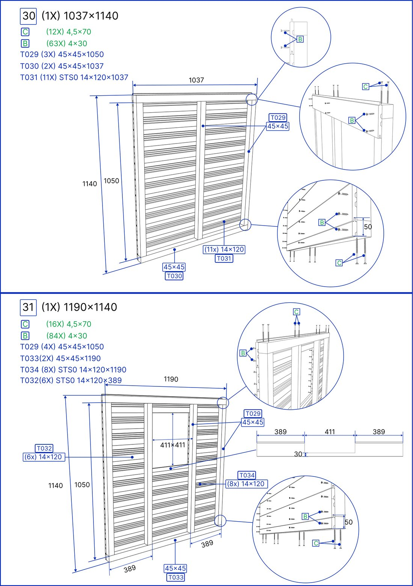
Sina annad lähteinfo. Meie viime selle tootmiseks, paigalduseks ja koolituseks kasutatavasse vormi.
Vaatame üle olemasolevad projektid, mõõdud, konstruktsiooni ja tootmise vajadused.
Loome 3D-mudeli ning tuletame sellest detailid, joonised, lõikelehed ja materjaliandmed.
Anname üle tootmis- ja paigalduspaketi ning soovi korral animatsiooni ja treeningmängu.
Üks toode algusest lõpuni: mudel, koostejoonised, lõikelehed, paigaldusjuhend ja ohutusala. Allpool valik teisi töid.
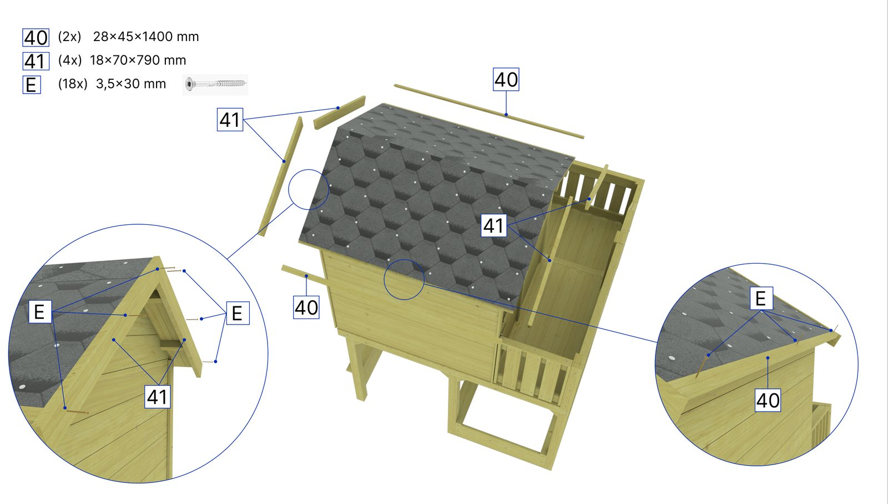
3D-mudel, tootmisjoonised, lõikelehed, paigaldusjuhend ja ohutusala ühes loogikas.
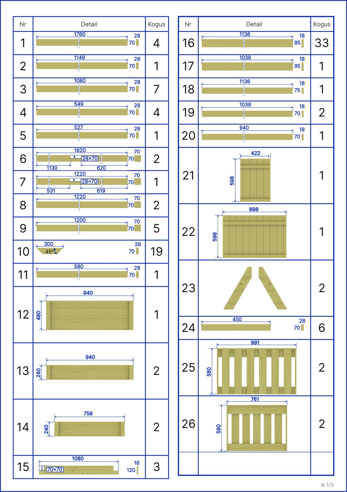
Iga detail mõõdus, kogusega ja pildiga.
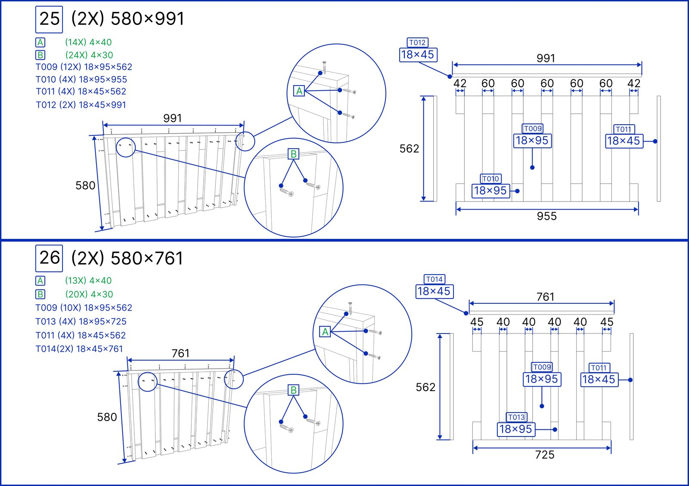
20 eelkokkupandavat koostet, iga tükk oma tähisega.
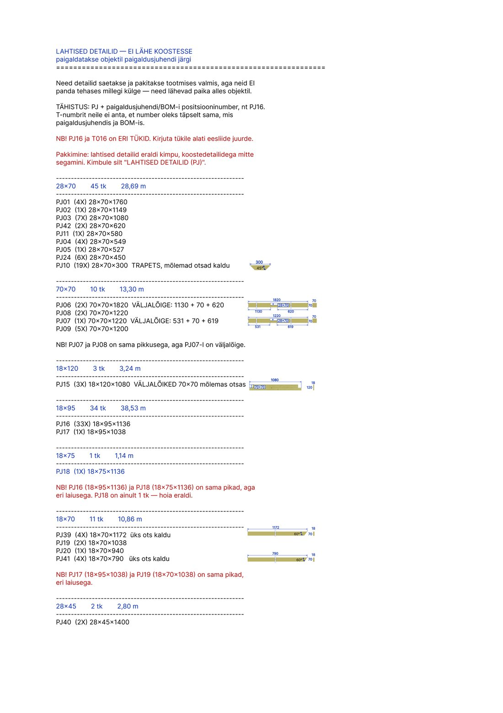
Lõikemõõdud ristlõigete kaupa, nurgad ja väljalõiked eraldi välja toodud.
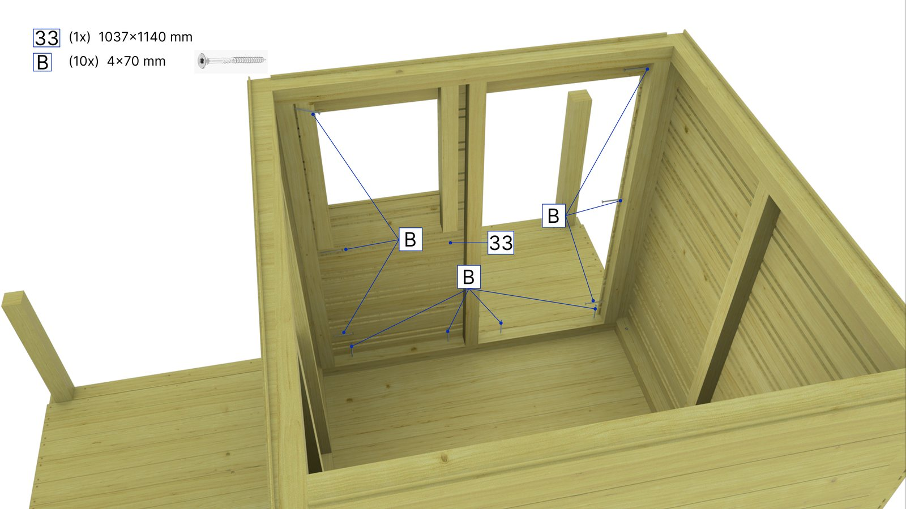
Iga samm oma detailide ja kinnitusvahenditega.
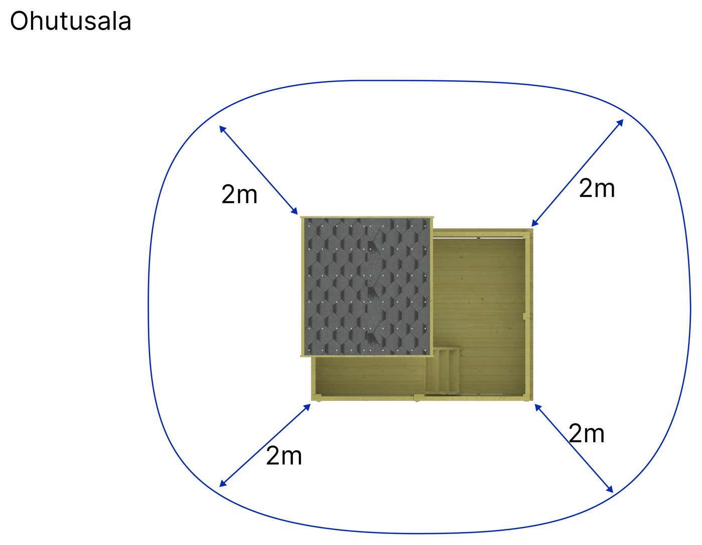
Vaba ala toote ümber — plaanina paigaldusjuhendi lõpus.
Mängutooted, carport ja tooterenderid — sama loogika, teine toode.
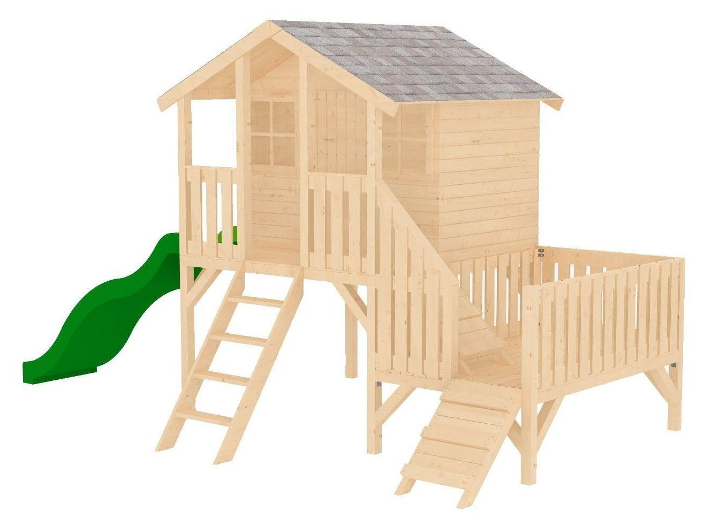
Paigaldusjuhend 13 lehel — detailide loend, sammud ja ohutusala.
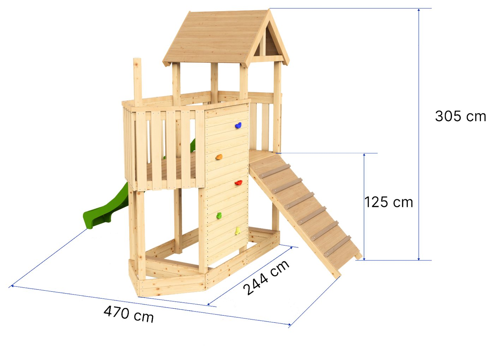
Paigaldusjuhend V1.8 — 23 joonist, iga detail oma numbriga.
Paigaldusanimatsioon: aluskate, roovid ja päikesekivid õiges järjekorras.
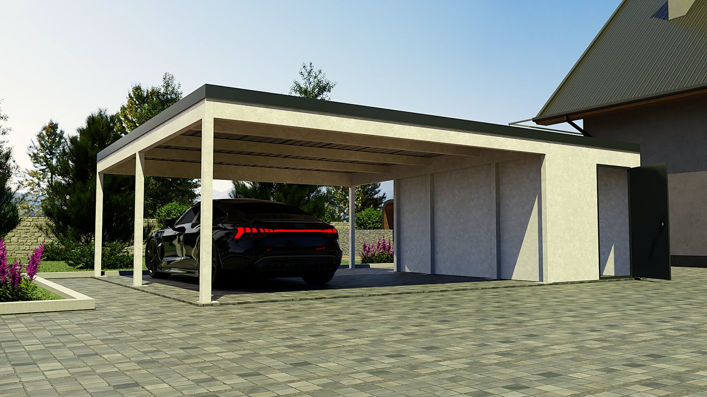
Tehniline andmeleht ja 20-leheline paigaldusjuhend.
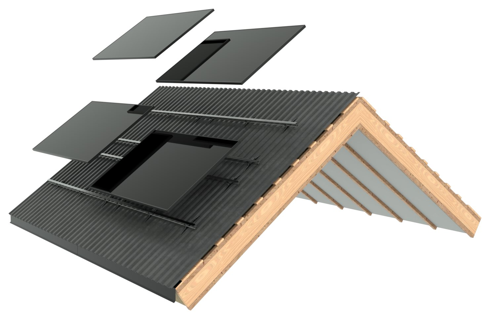
Sama vaade, mis animatsiooni aluseks — iga kiht eraldi.
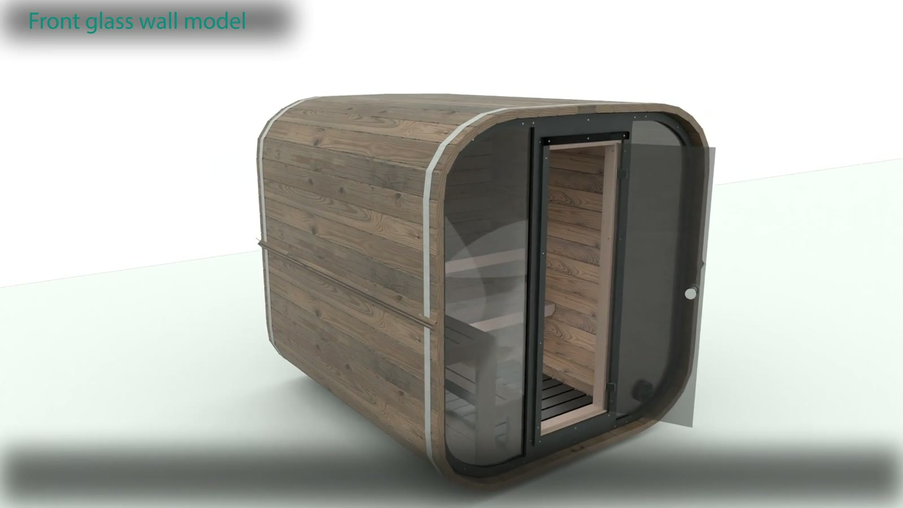
Renderid ja koosteanimatsioon kahes mõõdus — 160–220 ja 240.
Saada mudel või lähteinfo. Vaatame koos, mida on vaja — joonised, animatsioon või mäng.